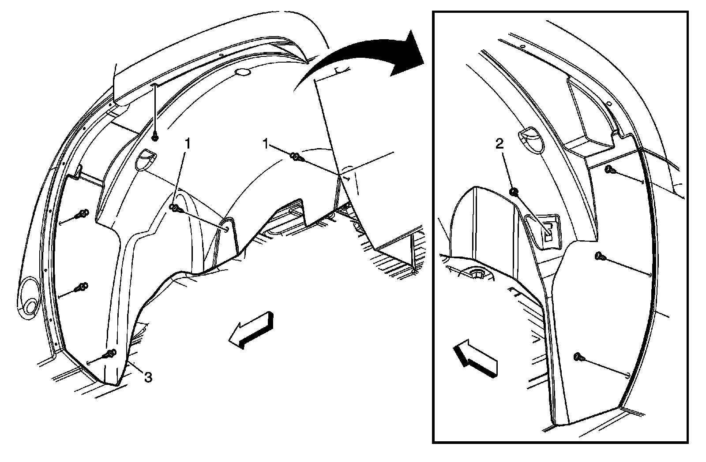
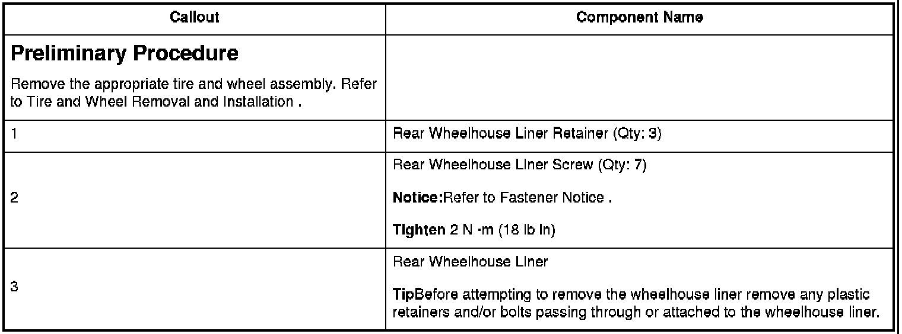

Rear Wheelhouse Panel Liner Replacement
Rear Wheelhouse Panel Liner Replacement


Preliminary Procedure
Notice:Refer to.
Tighten
TipBefore attempting to remove the wheelhouse liner remove any plastic retainers and/or bolts passing through or attached to the wheelhouse liner.